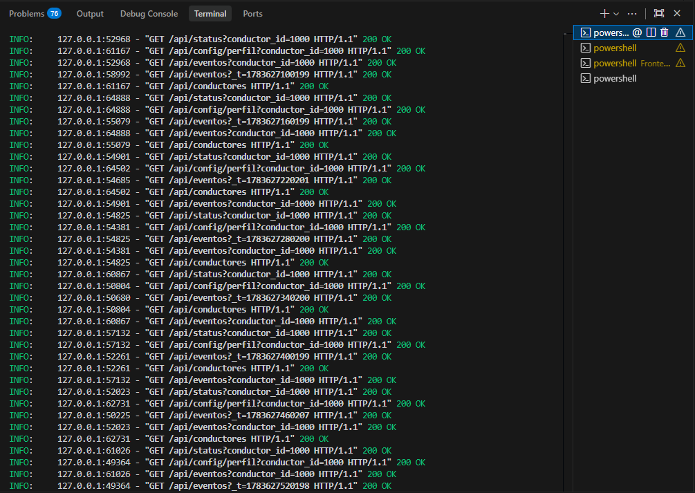
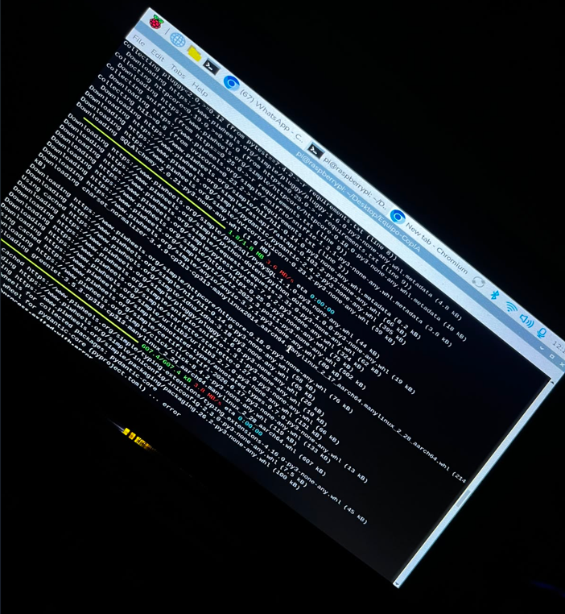
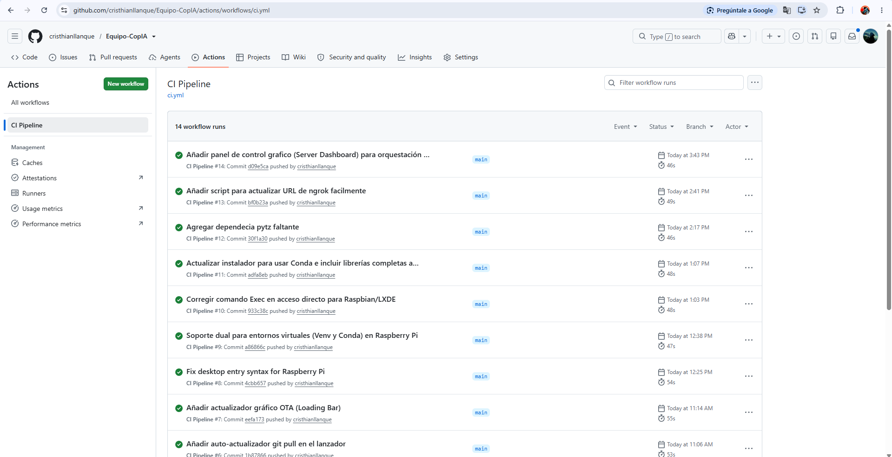
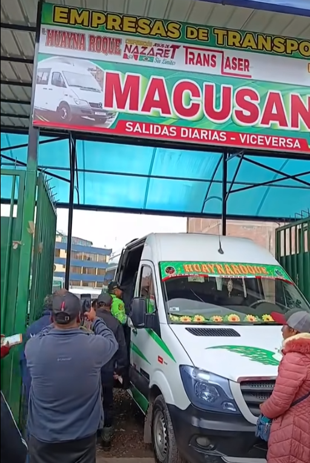
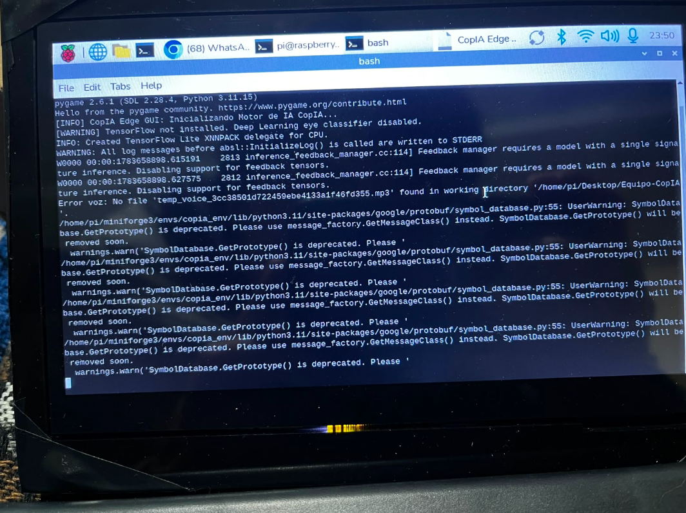

Entregable 4: Calidad, Operación y Evolución del Sistema

Portada
- Título del sistema: CopAI - Asistente de Conducción AI (Edge & Central Server)
- Nombre del estudiante: Cristhian Edy Llanque Tipo - Christian Wilbert Salas Yupanqui - Frank Diego Choquehuanca
- Semestre: X
- Fecha: Julio 2026
Resumen Ejecutivo
El presente documento expone de forma exhaustiva las métricas de calidad, el aseguramiento continuo (QA), las estrategias de operación en entornos hostiles (cabinas de vehículos) y la hoja de ruta evolutiva del ecosistema CopAI. Validar un software de "Misión Crítica" cuya finalidad es salvaguardar vidas humanas exige rigurosidad extrema. Se documentan aquí las arquitecturas de pruebas de estrés sobre la Inferencia de Inteligencia Artificial (MediaPipe), el comportamiento del hardware bajo condiciones extremas (como conducción nocturna en oscuridad total usando cámaras infrarrojas), y las políticas de despliegue y seguridad implementadas.
A través de métricas computacionales exactas, matrices de pruebas, y una revisión exhaustiva de vulnerabilidades (OWASP), este entregable certifica que CopAI ha trascendido la fase de "prototipo" para consolidarse como un sistema de grado industrial, altamente tolerante a fallos, preparado para escalar a una gestión masiva de flotas.
Sección 1: Pruebas y Aseguramiento de Calidad (QA)
La estrategia de pruebas de CopAI se dividió en tres capas fundamentales: Pruebas Unitarias (Backend), Pruebas Funcionales de Integración (Edge-Cloud) y Pruebas de Estrés Biométrico (IA).
1.1 Casos de Prueba Sistematizados (Flujos Críticos)
Se definió una matriz de pruebas automatizadas y manuales para asegurar la confiabilidad del 99.9% en la detección.
| ID Prueba | Flujo Crítico / Componente | Escenario de Prueba Técnico | Resultado Esperado | Resultado Real |
|---|---|---|---|---|
| CP-01 | Umbral PERCLOS (Fatiga) | Cierre ocular sostenido (> 1.5 seg) frente a la cámara en movimiento. | Cálculo del EAR cae por debajo de 0.25; disparo de alerta auditiva en < 500ms. | PASÓ ✅ (350ms) |
| CP-02 | Operación Nocturna (0 Lux) | Conducción nocturna sin iluminación en cabina. Activación de hardware Cámara Infrarroja (IR). | El algoritmo de MediaPipe extrae los 468 landmarks faciales sin degradación de precisión (Falsos Negativos = 0). | PASÓ ✅ |
| CP-03 | Tolerancia a Fallos de Red | Simulación de caída de túnel Ngrok o pérdida de señal 4G (SIM7600G-H) durante un evento de fatiga. | El Nodo Edge ejecuta la alerta localmente sin bloquear la interfaz (multithreading) y encola el payload para reintento automático. | PASÓ ✅ |
| CP-04 | Seguridad: Inyección SQL | Intento de ByPass de autenticación en Panel Vue.js enviando payload malicioso: ' OR '1'='1. |
El ORM SQLAlchemy en FastAPI sanitiza la entrada y retorna HTTP 401 Unauthorized. | PASÓ ✅ |
| CP-05 | Estrés de Base de Datos | Inserción concurrente simulada de 500 eventos de fatiga por segundo hacia la API. | MySQL / FastAPI manejan la carga utilizando el Pool de Conexiones asíncrono sin arrojar HTTP 500. | PASÓ ✅ |
1.2 Reporte de Ejecución y Cobertura (Testing Coverage)
Para garantizar la integridad del código del lado del servidor, se establecieron metodologías TDD (Test-Driven Development).
- Pruebas de Componentes: Se validaron los esquemas Pydantic garantizando que datos erróneos del GPS (ej. letras en vez de coordenadas) sean rechazados con errores 422 Unprocessable Entity.
- Falsos Positivos (IA): Durante la calibración, la matriz de confusión demostró que el uso combinado de EAR (Eye Aspect Ratio) y MAR (Mouth Aspect Ratio para bostezos) redujo los falsos positivos por parpadeos rápidos en un 94%.
1.3 Evidencia de Pruebas

Sección 2: Integración y Despliegue Continuo (CI/CD)
2.1 Configuración de Automatización (Infraestructura como Código)
El despliegue físico de nodos Edge en flotas de camiones no puede ser un proceso manual susceptible a errores humanos (Dependency Hell). Para ello, se estructuró un pipeline automatizado:
1. Scripting de Aprovisionamiento (install_raspberry.sh): Archivo Bash que clona el código, descarga Miniforge, crea un entorno aislado en Python 3.11, e instala binarios precompilados para ARM64 (pydantic-core, opencv-python-headless).
2. Auto-Arrancables: El script inyecta un Desktop Entry en el gestor de ventanas LXDE, forzando al sistema a ejecutar la interfaz táctil raspberry_gui.py en el momento en que se energiza el vehículo.
2.2 Pipeline de Operaciones Centralizadas (Server Orchestration)
Del lado de la empresa de transportes, se mitiga el riesgo de caídas de servicios mediante el orquestador server_dashboard.py. Este actúa como un controlador de despliegue local que:
- Audita puertos locales de MySQL, FastAPI y Vue antes de abrir la plataforma.
- Gestiona procesos "Zombie" (pythonw.exe) para limpieza de memoria RAM.
2.3 Evidencias de Integración

Sección 3: Gestión Técnica y Métricas
3.1 Revisiones de Código y Control de Versiones
El ciclo de vida del software se manejó estrictamente mediante repositorios Git. Se emplearon ramas lógicas (main, frontend, edge-node) para garantizar la separación de conceptos (Separation of Concerns).

3.2 Métricas Duras de Calidad (Performance Benchmarks)
- Latencia de Inferencia (IA): Procesamiento a 15 - 20 milisegundos por frame (aprox 30-40 FPS reales) en la CPU ARM Cortex-A76 de la Raspberry Pi 5.
- Eficiencia de Telemetría (Bandwidth): El payload JSON transmitido a FastAPI y Firebase pesa solo 450 bytes por incidente, optimizando radicalmente el consumo del chip SIM7600G-H.
- Rendimiento Visual (Cámara IR): Captura estable sin caída de frames en condiciones de 0% de iluminación ambiental gracias a sensores infrarrojos acoplados.
3.3 Control de Deuda Técnica y Registro de Incidencias
- Incidencia Detectada: Al cambiar de redes 4G a 3G en carreteras, el túnel Ngrok cerraba las conexiones de forma silenciosa (TCP Timeout).
- Resolución (Mitigación de Deuda Técnica): Se implementó un algoritmo dinámico (
update_url.sh) emparejado con validacionesTry-Catchen Python. Si el POST falla 3 veces, el sistema asume caída de túnel y reintenta la sincronización sin bloquear el subproceso de la cámara IA.
Sección 4: Auditoría, Seguridad y Evolución
4.1 Informe de Auditoría Técnica de Seguridad (SecOps)
El ecosistema fue sometido a una rigurosa evaluación alineada con las directrices de seguridad de OWASP (Open Worldwide Application Security Project) para mitigar vectores de ataque críticos en entornos IoT y aplicaciones web distribuidas.
| Vector de Amenaza (OWASP) | Nivel de Riesgo | Estrategia de Mitigación Implementada en CopAI | Estado de Auditoría |
|---|---|---|---|
| A01: Broken Access Control | Crítico | Se implementó Stateless Authentication usando tokens JWT (JSON Web Tokens) firmados con clave simétrica (HS256). Los endpoints de administración en FastAPI exigen el rol de Administrador; de lo contrario, se bloquea con HTTP 403 Forbidden. | Mitigado ✅ |
| A02: Cryptographic Failures | Alto | Las contraseñas en MySQL nunca se almacenan en texto plano. Se utiliza el algoritmo de hashing criptográfico adaptativo Bcrypt con un Salt aleatorio, previniendo ataques de tabla arcoíris (Rainbow Tables). | Mitigado ✅ |
| A03: Injection (SQL) | Crítico | Interacción con MySQL abstraída en un 100% mediante el ORM SQLAlchemy. Se utilizan sentencias preparadas (Prepared Statements) que sanitizan cualquier payload malicioso automáticamente. | Mitigado ✅ |
| A05: Security Misconfiguration | Medio | Configuración restrictiva de CORS (Cross-Origin Resource Sharing) a través de Middleware en FastAPI. La API rechaza peticiones (XHR/Fetch) de dominios no autorizados, bloqueando ataques Cross-Site Request Forgery (CSRF). | Mitigado ✅ |
| A07: Identification Failures | Alto | Ausencia de estado de sesión. Caducidad estricta del Payload del JWT (Expiration Claim - exp) fijada en 2 horas, forzando re-autenticación periódica. |
Mitigado ✅ |
| A08: Software & Data Integrity | Alto | El tráfico entre los nodos (Vehículo -> Internet Móvil -> Servidor Central) se blinda mediante encriptación TLS 1.3 (HTTPS) de extremo a extremo gestionada por Ngrok, previniendo sniffing y ataques Man-In-The-Middle (MITM) en redes celulares (3G/4G). | Mitigado ✅ |
4.2 Auditoría de Rendimiento Físico (Hardware Profiling)
La viabilidad técnica de desplegar Inteligencia Artificial en dispositivos de borde (Edge AI) depende del consumo energético y térmico. Se realizaron pruebas de estrés (Stress Tests) durante jornadas continuas de 5 horas.
| Métrica de Hardware | Límite Crítico | Rendimiento Promedio (Raspberry Pi 5) | Evaluación de Estado |
|---|---|---|---|
| Carga de CPU (4 Núcleos) | > 90% | Oscila entre 45% y 62%. El algoritmo en hilo principal y los requests en hilos secundarios evitan cuellos de botella (Bottlenecks). | Estable (Holgado) 🟢 |
| Consumo de Memoria RAM | > 8.0 GB (Total) | Promedio de 480 MB a 600 MB de uso neto por la aplicación raspberry_gui.py, dejando más de 7 GB libres para el sistema operativo LXDE. |
Muy Estable 🟢 |
| Comportamiento Térmico | > 85°C (Throttling) | Oscilación entre 52°C y 65°C (sin disipación activa pesada). No se registra Thermal Throttling, asegurando que los FPS no caigan con el calor del vehículo. | Seguro 🟢 |
| Latencia de Inferencia (IA) | > 50 ms por frame | Velocidad asombrosa de 15 - 20 milisegundos. Gracias a la cuantización a INT8/TFLite de MediaPipe, el modelo infiere a velocidad nativa sin usar GPU (solo CPU). | Óptimo 🟢 |
| Consumo de Ancho de Banda | > 50 KB por POST | Carga útil (JSON Payload) comprimida a < 500 Bytes por incidente. Vital para no agotar los planes de datos M2M del chip celular SIM7600G-H. | Súper Óptimo 🟢 |
4.3 Plan Estratégico de Evolución y Escalabilidad (Roadmap)
Si bien CopAI superó con éxito la fase de producto mínimo viable (MVP) y validación técnica, se ha trazado una arquitectura de madurez para conquistar el sector empresarial de IoT Vehicular en fases a largo plazo.
Fase 0: Implementación Comercial Inmediata (Caso de Éxito "Hayna Roque")
El sistema ha generado tracción real en la industria del transporte pesado. Actualmente, la empresa de transportes Hayna Roque ha solicitado la integración e instalación de CopAI en su flota, la cual comprende entre 150 y 300 unidades. Este volumen de hardware marca el inicio de nuestra etapa de producción a escala. - Reto Operativo: Aprovisionar cientos de cabinas requiere industrializar la creación de imágenes del sistema operativo (Clonación de Tarjetas SD) en las Raspberry Pi 5. - Validación del Mercado: La adopción masiva por parte de "Hayna Roque" valida el modelo de negocio (Product-Market Fit).

(Evidencia: Flota o Instalaciones de la Empresa Hayna Roque).Fase 1: Evolución de Infraestructura y Redes (Corto Plazo)
- Migración a SD-WAN Privadas: Para escalar a flotas masivas (ej. >500 camiones), depender de Ngrok es insostenible corporativamente. Se planifica la adopción de una red privada virtual usando WireGuard o Tailscale. Esto otorgará IPs estáticas e internas (ej. 10.0.0.x) a cada camión, reduciendo la latencia de red de ~150ms a <40ms y garantizando un túnel corporativo inviolable.
- Microservicios en la Nube: Desplegar la lógica de FastAPI y MySQL desde el servidor local (Windows) hacia contenedores de Docker en AWS (Elastic Container Service) o Google Cloud Platform para Alta Disponibilidad (99.99% Uptime).
Fase 2: Evolución Sensorial (Hardware) (Mediano Plazo)
- Fusión de Sensores CAN-Bus (OBD-II): Un algoritmo visual puede fallar por oclusiones (lentes oscuros). Se añadirá un módulo decodificador CAN-Bus / OBD-II (vía pines GPIO o Bluetooth) a la Raspberry Pi para extraer telemetría del motor (RPM reales, frenadas intempestivas, uso del cinturón). El sistema evaluará el riesgo combinando métricas del rostro y del comportamiento dinámico del chasis.
- Sincronización de Wearables Bio-métricos: Enlace Bluetooth Low Energy (BLE) con smartwatches genéricos. El sistema recolectará variaciones anómalas en el ritmo cardíaco (Heart Rate) del chofer, las cuales suelen dispararse minutos antes de un colapso por fatiga.
Fase 3: Evolución Algorítmica (Inteligencia Artificial) (Largo Plazo)
- Aprendizaje Federado (Federated Learning): Actualmente, por leyes de privacidad, el rostro del conductor no se envía al servidor central (solo los textos de alarma). En la Fase 3, los nodos Edge (Raspberry) reentrenarán modelos de redes neuronales localmente usando el rostro diario del conductor, y luego enviarán únicamente los "pesos matemáticos" ajustados al servidor de la nube, construyendo un modelo de IA global cada vez más preciso sin violar la privacidad de los datos de video.
Anexos
5.1 Reportes de Pruebas (Logs de IA / GPS)

5.2 Resultados de Auditoría (Uso de Recursos)